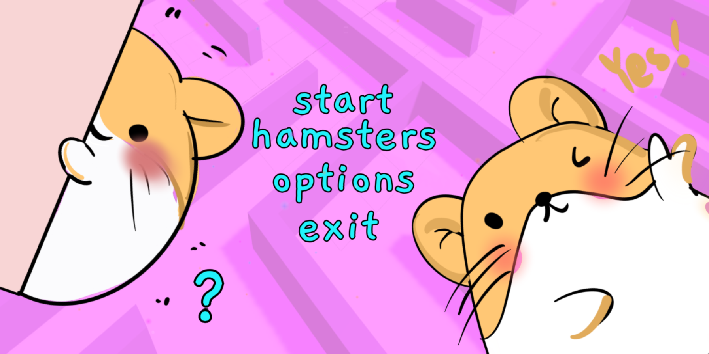
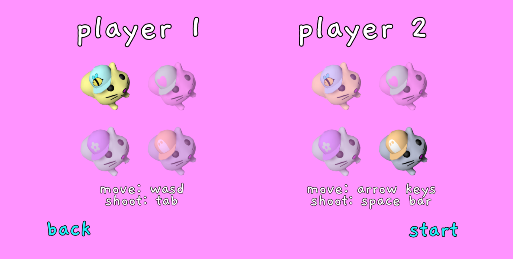
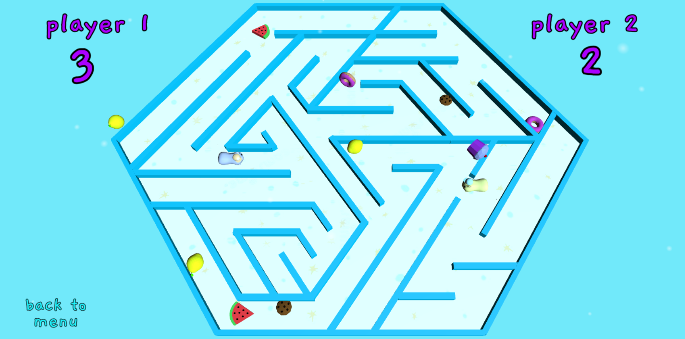
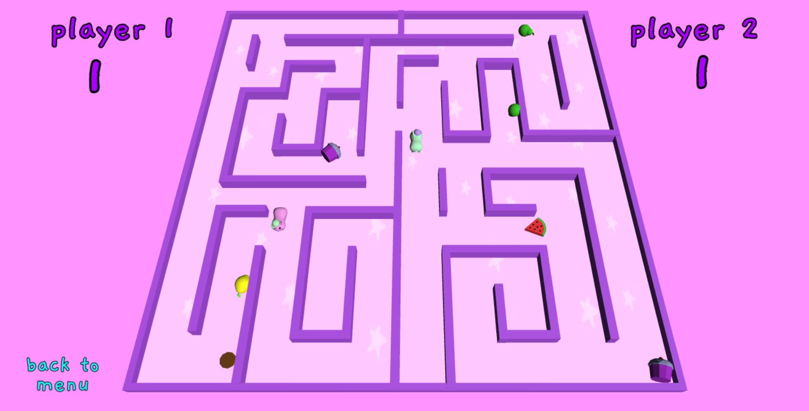

hamster maze
This game was created by a team of three students as part of a university web game development course. Hamster Maze is a game for two players with a static camera showing from above the entire field of play, which is the maze.

Each player chooses a hamster character and competes to collect seven fruit items faster than the opponent, while avoiding candy‑type obstacles falling from the sky. The choice of fruits as rewards and sweets as hazards is meant to subtly promote healthy eating, with children as the primary target audience.

The game currently includes two levels with different maze layouts, and the system is designed to be easily extended with additional stages. At the start of each match, a level is selected at random.

Some of the game assets, such as music and sound effects, were sourced from free online asset libraries. I was mainly responsible for designing the visuals, modelling all 3D objects in Blender, and programming selected gameplay scripts.
